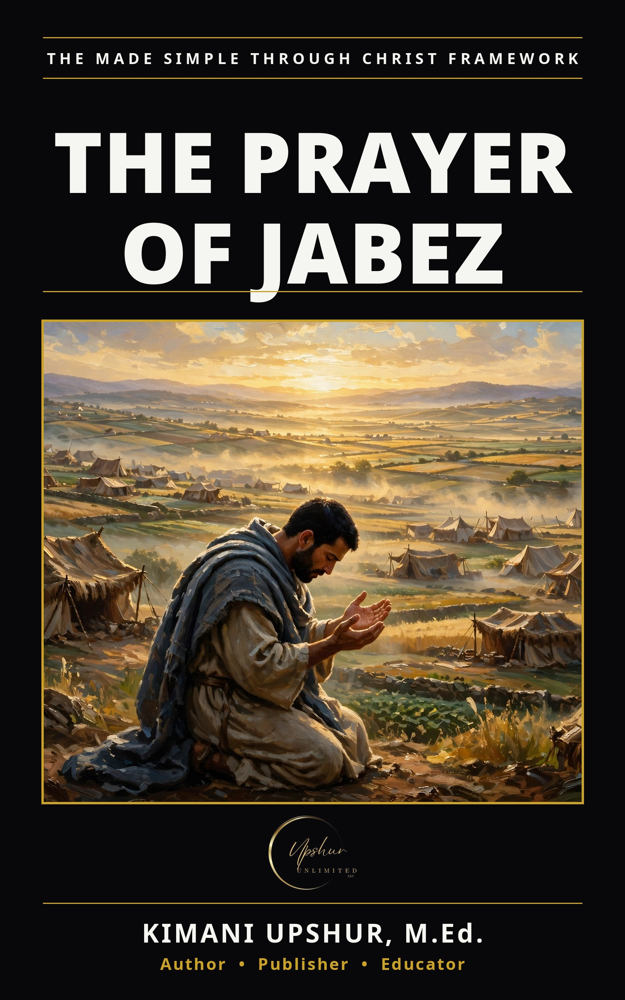

Home / Books / Bible People & Stories
The Prayer of Jabez Made Simple

Buried in the genealogies of 1 Chronicles, two verses record the boldest short prayer in Scripture: Jabez — a man whose name meant sorrow — called on the God of Israel and asked to be blessed indeed, to have his coast enlarged, for God's hand to be with him, and to be kept from evil. And God granted him that which he requested. This book walks the prayer phrase by phrase, then reads it through the full light of the New Testament: prayer to the Father, through Jesus Christ the Lord and Savior, by the Holy Spirit. Ten teaching chapters, reflection questions, a thirty-day prayer pattern, and a closing prayer — Scripture-first, plain-language, and practical.
- Publisher
- Upshur Unlimited, LLC
- Author
- Kimani Upshur, M.Ed.
- Format
- Ebook
- Language
- English